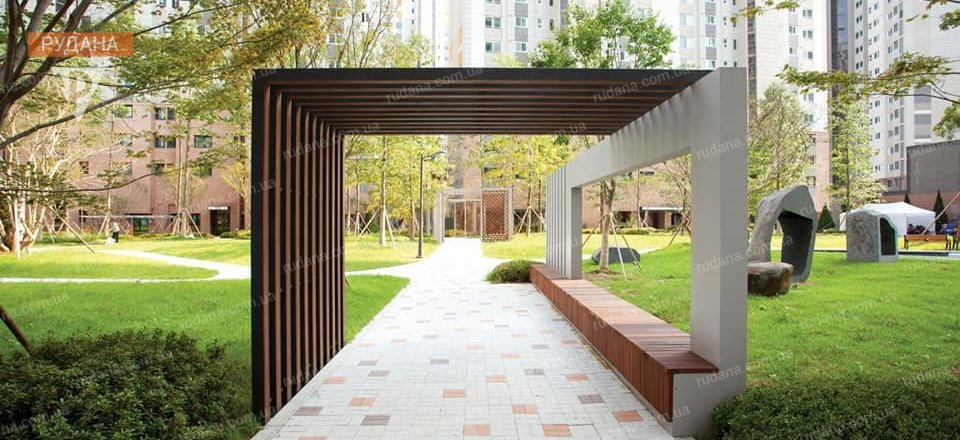
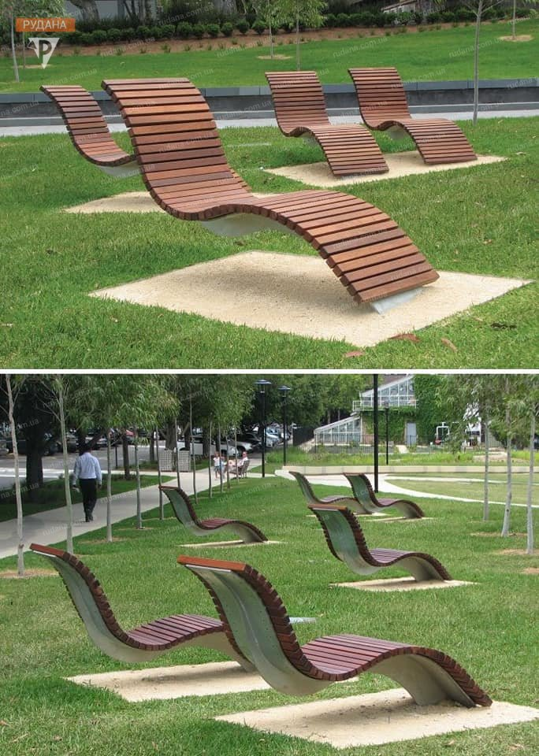
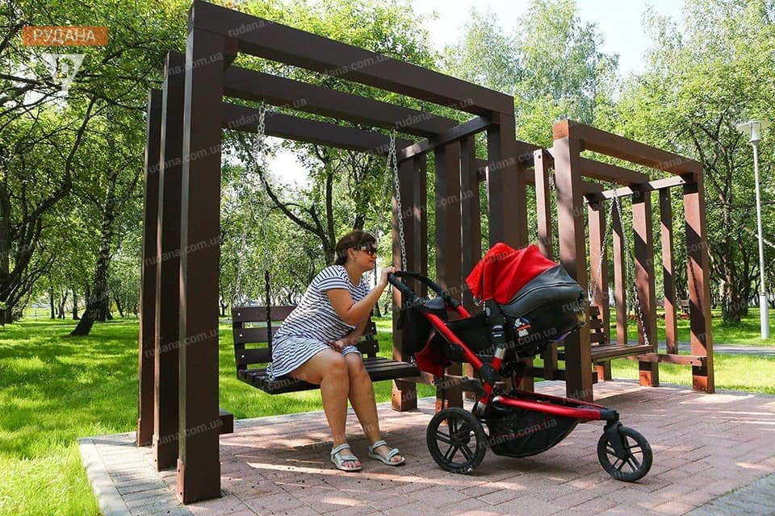

Про проєкт
БЛАГОДІЙНИКИ КРИВОГО РОГУ ПРЕДСТАВИЛИ ВЛАСНИЙ ПРОЄКТ НА КОНКУРС "ГРОМАДСЬКИЙ БЮДЖЕТ"
У Кривому Розі хочуть урізноманітнити парк ім. Федора Мершавцева новими сучасними архітектурними формами. Своє бачення автори проєкту представили у соцмережі. Благодійний фонд «Громадська ініціатива мешканців Кривбасу» представила концепцію проєкту до участі у міському конкурсі "Громадський бюджет-2021". "Оскільки парк є пам'яткою садово-паркового мистецтва, то будь-яке будівництво тут заборонено. Але додати йому сучасності і нового стилю - нам під силу", - кажуть автори ідеї.
  